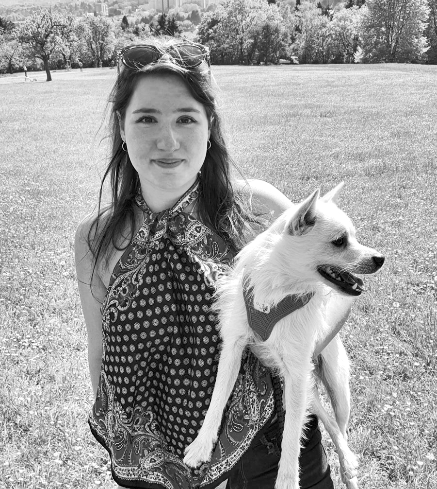
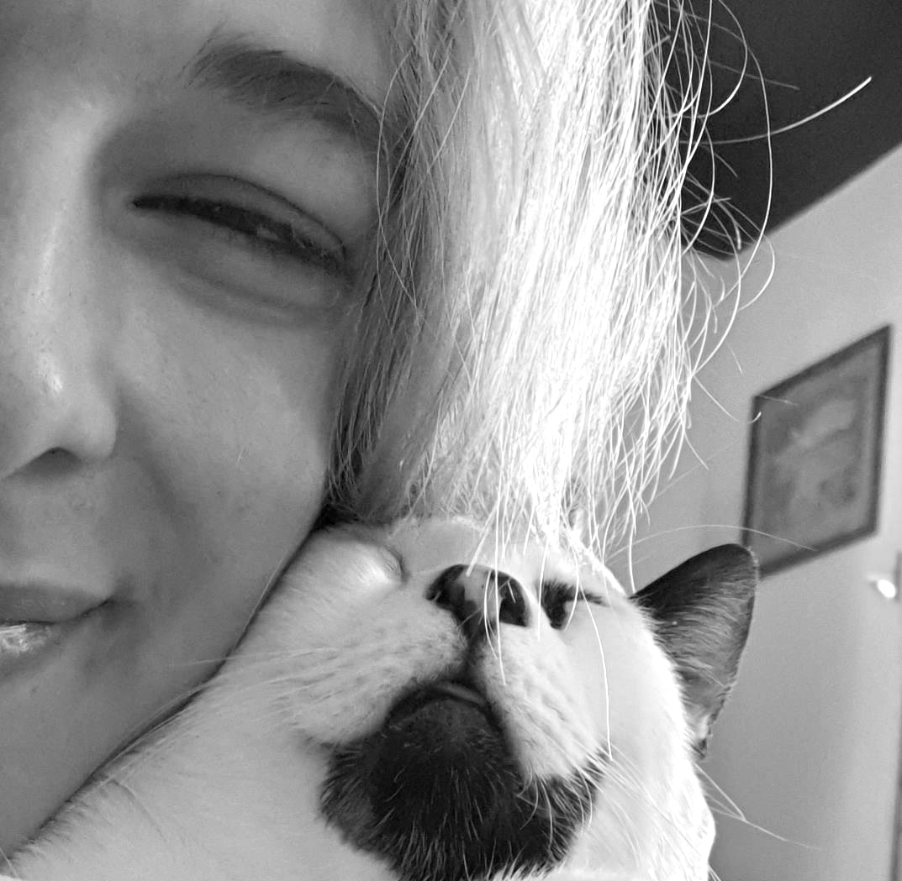
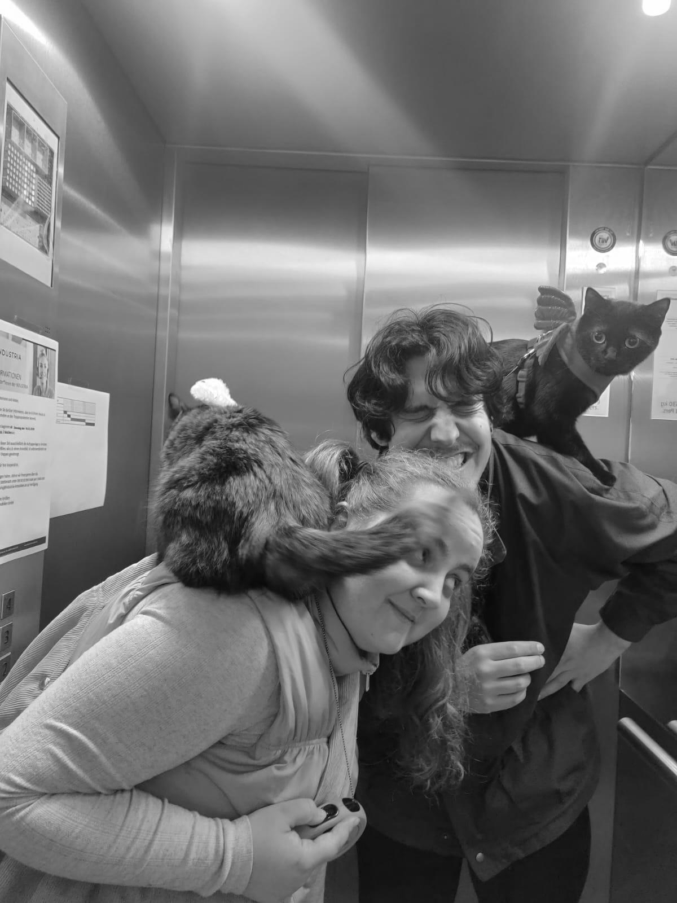
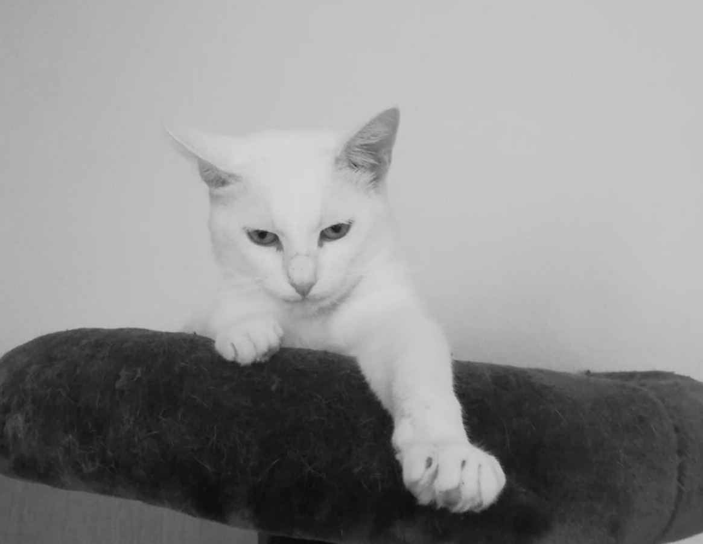
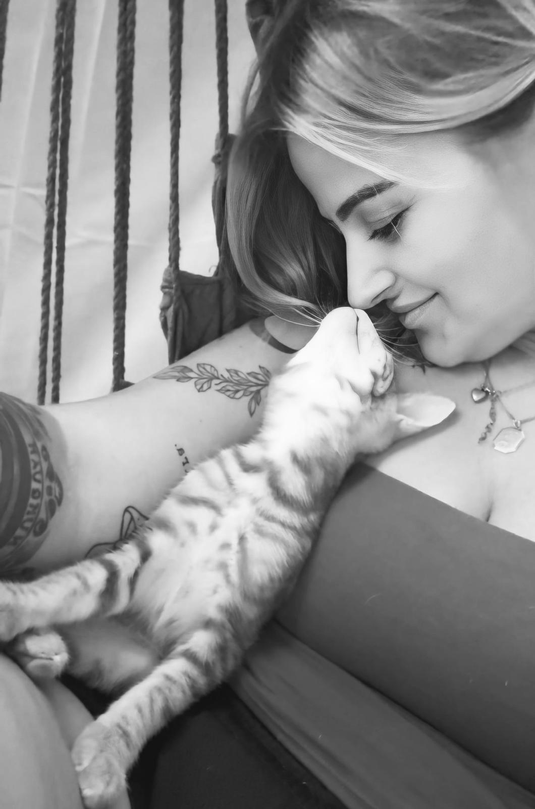
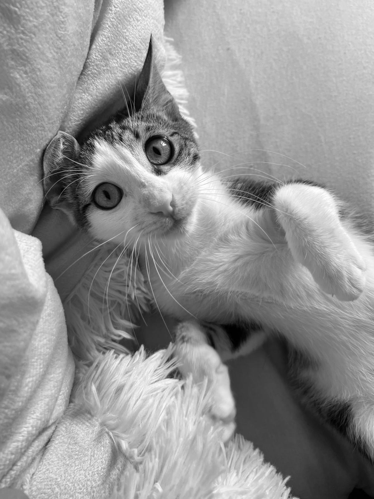
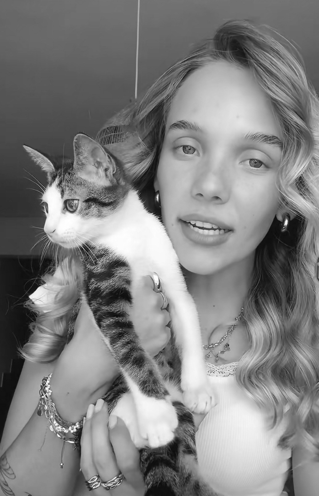
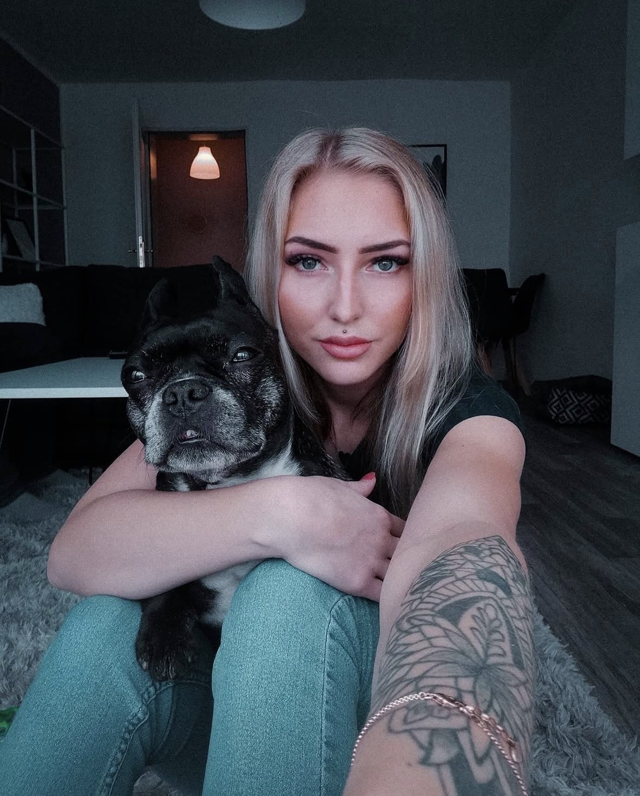

Sandra
Der Wunsch im Tierschutz selbst aktiv zu werden begann bei mir im Urlaub auf Kreta im Jahr 2021. Das war die Geburtsstunde der Idee eines Vereins.
Birte
Meine Liebe zu Tieren, besonders zu Katzen, war schon immer groß. Der Fund eines Kittens im Urlaub auf Kreta führte mich zum Verein.

Chiara
Meinen eigenen Kater habe ich verletzt auf Kreta gefunden. Ein harter Kampf liegt hinter uns. Aber Rocky ist ein Engel. Es war klar, dass ich mich hier stark machen möchte.

Melissa
Mein Steckenpferd sind die Betreuung von Handicap Katzen. Sie sind ganz besondere Seelen.

Jessie
Als Katzenmama weiß ich wie gut es den Haustieren geht, aber eben auch wie schlimm die Situation vor Ort ist.
Nina
Ich bin da wo ich gebraucht werde. Tierschutz geht uns alle an.
Laura
Als Touristin in Not weiß ich wie hart es ist Hilfe zu finden. Das selbe Ziel und die selbe Leidenschaft verbindet mich mit dem Verein.

Laura
Hier kann ich mich für die stark machen, die schwach sind und dringend Hilfe brauchen. Tierschutz ist ein hartes Stück Arbeit, die im Team Spass macht.

Melisa
„Als zweifache Katzen- Mama bin ich auf den Verein aufmerksam geworden. Über die Vermittlungshilfe fand ich meinen Jüngling- und eins führte zum anderen. Heute darf ich selbst Teil dieser besonderen Vereinsfamilie sein.!

Melina
Mit geballter Frauenpower gegen das Tierleid auf der Welt. Aufklärung und Kastration ist die einzige Möglichkeit das Leid nachhaltig zu minimieren.

Rica
Tierschutz hat mich mit meiner Auswanderung gefesselt. Seither setze ich mich für Kastration und med. Versorgung ein. Wer einmal seine Augen und sein Herz geöffnet hat, kann sie nie wieder schließen.

Elisa
Auch ich startete als Touristin meine Reise in den Verein. Die Zustände vor Ort haben mich nicht mehr in Ruhe gelassen. Seither kämpfe ich mit den Mädels von HfPK.
Adrienne
Als Miezen Besitzer bin ich begeistert von der Arbeit mit Tieren. Es war schnell klar, dass ich hier gebraucht werde und noch einiges bewegen kann.
Vereinssatzung
Fassung vom 21.06.2023